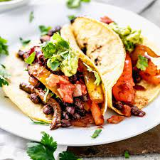

Vegetarian Tacos

Description
Meatless tacos.
Ingredients
- small onion, green bellpepper
- taco shells
- canned black beans
- packaged taco seasoning
- salsa
- cilantro for garnishing
- salt & pepper
Steps
- Chop up veggies
- Cook until browned.
- Add canned black beans and seasonings.
- Combine ingredients and enjoy.
back